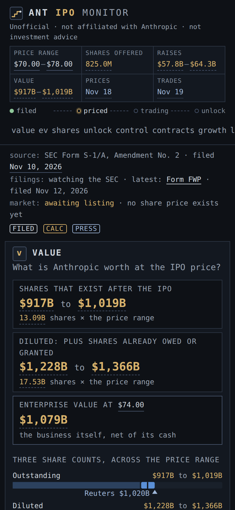
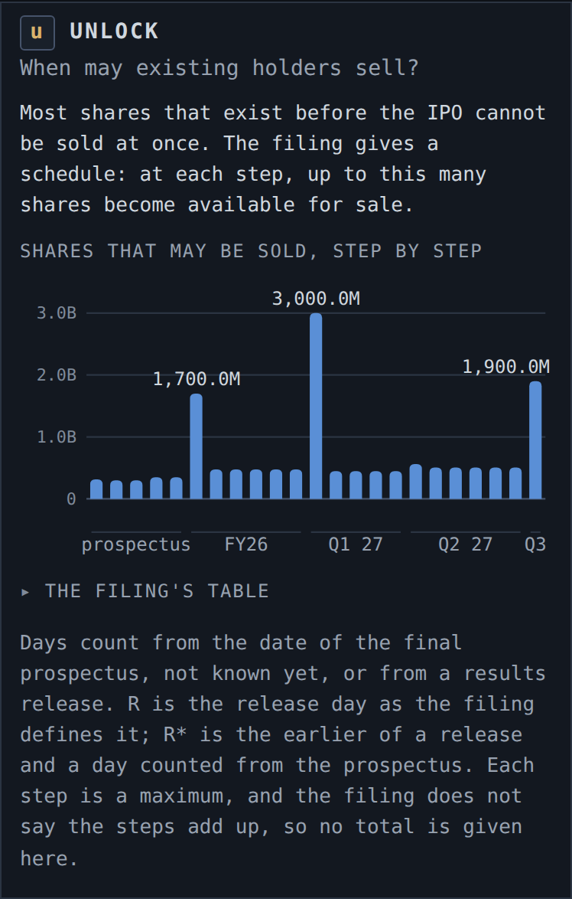
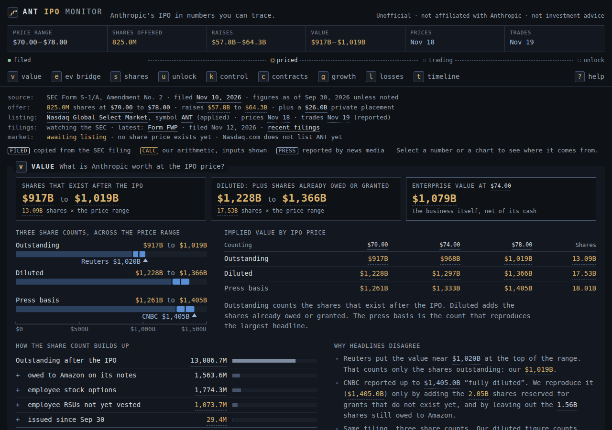
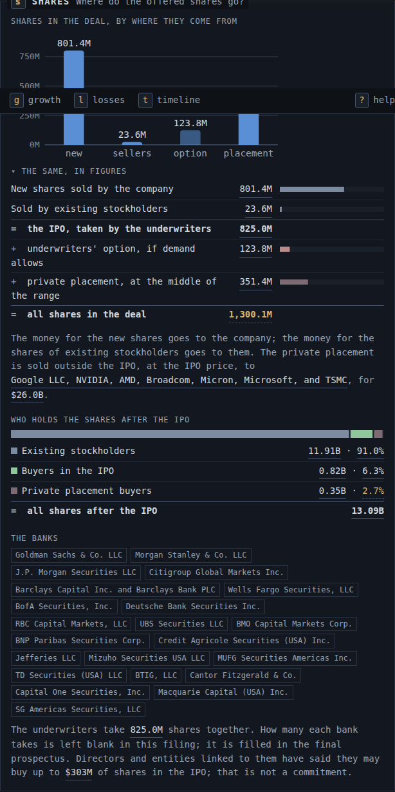
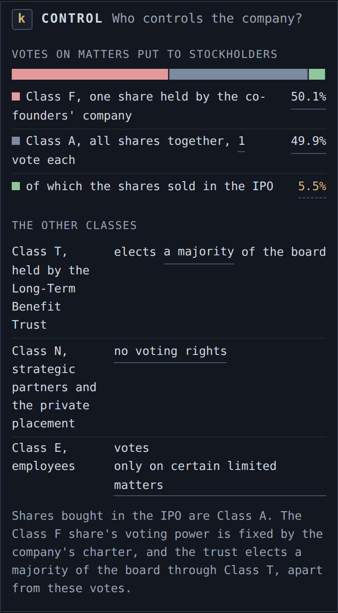
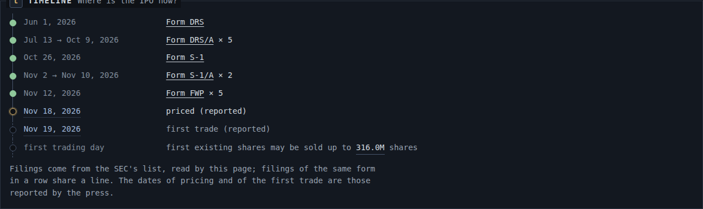

Loop 004 — A richer front: the IPO at a glance, where the shares go, when they unlock, who controls the company
2026-11-16 · More of the filing on the page, without losing what the owner likes: a strip of key figures and the stage of the IPO at the top, a panel bar that follows the reader, and four new panels (where the offered shares go, when existing shares may be sold, who controls the company, and the timeline). Every new number opens its source. Version 0.5.0, live at agmgd-on-ipo-monitor-ba4eccd0.fly.dev.
Why
Could we enrich the header a little, and the navigation? I like the site right now, it is really good: dense, clean, very code-like. Could we put more stats at the top, the expected date? Maybe a bar chart of the official distribution: where do these 825 million shares go? What other information could we add that we are able to validate? And maybe a little more visual, not necessarily branding.
Do you have blockers for 1 to 6? Let's go. If it is all information you can validate and that is in the document, that is fine.
The owner spoke in French; their words are reworded in English, with the meaning unchanged.
What changed



- At the top: price range, shares offered, amount raised, value at the range, and the reported dates of pricing and first trade. Below, the stage reached: filed, priced, trading, first unlock. It moves on events the service sees (a final prospectus, a first quote), not on a clock.
- SHARES: the 825 million shares of the IPO are 801.4 million new shares (the money goes to the company) and 23.6 million sold by existing stockholders (the money goes to them). On top: the underwriters' option (123.8 million) and the private placement (351.4 million at the middle of the range, to Google, NVIDIA, AMD, Broadcom, Micron, Microsoft and TSMC). After the IPO: existing holders 91.0%, IPO buyers 6.3%, private placement 2.7%. The 22 banks are listed; how many shares each takes is blank in this filing. Insiders may buy up to $303 million, not binding.
- UNLOCK: 23 steps, from up to 316 million shares on the first trading day to the big steps of 1.7, 3.0 and 1.9 billion after results releases. The table keeps the filing's wording for each step.
- CONTROL: the single Class F share of the co-founders' company holds 50.1% of the votes; all Class A shares together 49.9%, of which the shares sold in the IPO about 5.5%. The Long-Term Benefit Trust elects a majority of the board through Class T; Class N has no vote; Class E votes on limited matters.
- TIMELINE: the filings from the SEC's list, from the draft of June 1 to the documents for investors of November 12, then the reported pricing and first trade, then the first unlock.
- A mark of the project's own: a frame and a line climbing in steps. Nothing from Anthropic's logo or colors.



How each figure is checked
56 new facts are copied by the extraction script with their page and passage. Thirty new consistency checks run at every rendering: the banks' total equals the shares sold by the company and by existing stockholders (825,000,000 both ways); existing holders, IPO buyers and the private placement add up to all shares after the IPO (two shares apart, within the allowed ten); the percentages the filing states match the arithmetic; Class F and Class A make 100% of the votes; each unlock step is smaller than the shares outstanding.
One thing was left out on purpose: a total of the unlock steps. They add up to 15.5 billion shares, more than exist after the IPO even with options and RSUs, and the filing does not say they add up. The page shows each step's maximum and says so.
Checks
| Check | Result | Evidence |
|---|---|---|
| Format, lint, strict types | passed | ruff, mypy, locally. |
| Unit tests, local | passed | 120, six of them new (facts, arithmetic by hand, step labels, timeline, panels). |
| Real-browser tests, local | passed | 13 in Chromium, at 360, 390 and 430 px and on a desktop. Two were adjusted: the panel bar may scroll inside itself, and on a phone the final price is tapped in the strip. |
| Looked at in a browser | passed | Each new panel at 390 and 1280 px; the first two layouts of UNLOCK and SHARES were too narrow and were stacked. |
| CI, live deployment, real-browser tests against the live site | see below | Added after the release. |
| The owner looks at the new page | not_run | Only the owner can. |
What is left
- The owner's look at the new front, and answers on D-028 to D-031.
- The allocation among banks and the final price, from the final prospectus (watched).
- The Nasdaq source at night; the first trade, reported for November 19.